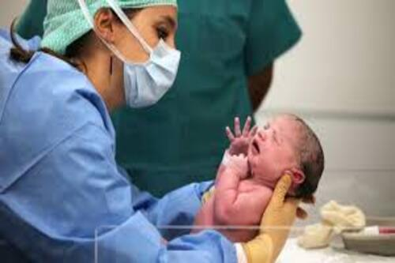

Une maternité est un service hospitalier ou une clinique spécialisée prenant en charge les femmes enceintes, l'accouchement et
les soins post-partum pour la mère et le nouveau-né. Ces établissements assurent le suivi de la grossesse, les urgences obstétricales,
et la surveillance néonatale, avec des niveaux de soins adaptés.
Voici les differents images

Voici les aspects clés à retenir :
Fonction : Accueillir les accouchements (simples ou compliqués) et prodiguer les soins médicaux nécessaires.
Équipes : Le personnel se compose de sages-femmes, gynécologues-obstétriciens, pédiatres, et aides-soignants, travaillant 24h/24.
Niveau I : Pour les grossesses sans risque.
Niveau II (a/b) : Pour les grossesses sans risque.
Niveau III : Pour les grossesses à haut risque et grands prématurés (réanimation néonatale).
Maternité : En France, le congé légal est de 16 semaines, pouvant aller jusqu'à 26 semaines pour des naissances multiples ou selon la situation familiale.